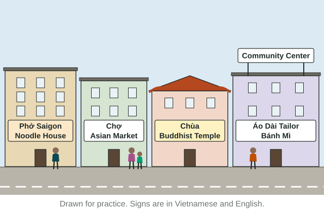

Cultural Landscapes
The cultural landscape is the human imprint on the land: buildings, fields, signs and places of worship.
Part 1 · Hook
Why this matters
Part 2 · Before you start
What this builds on
Part 3 · Prerequisite check
Quick check before you start
1. Which of these is a culture trait?
- The style of a group's houses
- The height of a nearby hill
- The yearly rainfall
- The type of rock underground
Show the answer
A culture trait is something people learn and share, such as a building style. Hills, rain and rocks are physical.
- Correct: The style of a group's houses:
- The height of a nearby hill:
- The yearly rainfall:
- The type of rock underground:
2. Many families from one town in Mexico settle in the same neighborhood of Chicago because relatives already live there. What kind of migration is this?
- Chain migration
- Step migration
- Forced migration
- Transhumance
Show the answer
Chain migration is moving to a place because family or friends from home already live there.
- Correct: Chain migration:
- Step migration:
- Forced migration:
- Transhumance:
Part 4 · See it
See it first

Part 5 · Step by step
How it works, step by step
- A group settles in a place and uses the landit adds buildings, farms, signs and places of worship: its cultural landscape
- Later groups arrive or the economy changesthey reuse, change or replace those marks, so the landscape builds up in layers (sequent occupance)
- Migrants of one ethnicity settle near relatives and shared servicesan ethnic neighborhood forms, with signs, shops and temples that serve the group
- Ideas about gender and ethnicity change in a societywho uses which spaces changes, and the built landscape follows
Part 6 · Key ideas
Key ideas
- The cultural landscape is the land as people have changed it: fields, buildings, signs, roads and places of worship laid over the physical landscape.
- Sequent occupance is the idea that each group that occupies a place leaves marks that later groups keep, change or reuse, so a landscape has layers, as at St. Anthony Falls in Minneapolis.
- Traditional architecture follows a long-standing local style and local materials (an adobe home, a Navajo hogan). Postmodern architecture, from about the 1970s on, mixes styles on purpose and looks similar in many cities.
- Ethnicity is identity with a group that shares ancestry and traditions. An ethnic neighborhood is an area where one ethnic group is concentrated, visible in its signs, shops and places of worship.
Part 7 · Misconception
A common mistake
The wrong idea: The cultural landscape is the natural scenery of a place: its mountains, rivers and forests.
What actually happens: Those are the physical landscape. The cultural landscape is what people have added or changed: in the Douro Valley of Portugal, the river is physical, but the vineyards planted on the slopes are cultural.
Part 8 · Check yourself
Check yourself
Exam-style questions. Anything you miss goes into your review queue.
Image
A street in a Vietnamese American neighborhood

1. Which evidence in the scene best shows that this street is in an ethnic neighborhood?
- Shops and a temple with signs in Vietnamese
- A painted center line on a two-lane street
- Buildings of two and three stories in a row
- People walking along the sidewalk past the shops
Show the answer
businesses, a place of worship and signs in Vietnamese all serve one ethnic group. Together they mark an ethnic neighborhood on the landscape.
- Correct: Shops and a temple with signs in Vietnamese: Right: businesses, a place of worship and signs in Vietnamese all serve one ethnic group. Together they mark an ethnic neighborhood on the landscape.
- A painted center line on a two-lane street: Road markings look the same in any neighborhood. They say nothing about the people who live there.
- Buildings of two and three stories in a row: Building height alone does not show who lives on a street or which culture shaped it.
- People walking along the sidewalk past the shops: People walk on every busy street. The signs and the kinds of businesses are what show one ethnic group.
2. Which feature in the scene is a religious mark on the cultural landscape?
- The noodle house sign that reads Phở Saigon
- The temple labeled Chùa
- The tailor shop that sells áo dài dresses
- The community center sign above the shops
Show the answer
a Buddhist temple, with a roof style brought from Viet Nam, is a religious mark people added to the landscape.
- The noodle house sign that reads Phở Saigon: A restaurant sign is a mark of food and language on the landscape, not of religion.
- Correct: The temple labeled Chùa: Right: a Buddhist temple, with a roof style brought from Viet Nam, is a religious mark people added to the landscape.
- The tailor shop that sells áo dài dresses: Clothing is a culture trait, but it is not a religious one here.
- The community center sign above the shops: A community center serves the neighborhood, but nothing in the scene marks it as religious.
3. Which question can the drawn scene NOT answer?
- Whether any signs on the street use the Vietnamese language
- Whether the street has a place of worship on it
- What share of residents are Vietnamese American
- Whether shops on the street sell Vietnamese food
Show the answer
a scene shows signs and buildings, not counts of people. To know the share of residents, you need census data for the neighborhood.
- Whether any signs on the street use the Vietnamese language: You can read the signs in the scene: several use Vietnamese words.
- Whether the street has a place of worship on it: The temple labeled Chùa is visible in the scene.
- Correct: What share of residents are Vietnamese American: Right: a scene shows signs and buildings, not counts of people. To know the share of residents, you need census data for the neighborhood.
- Whether shops on the street sell Vietnamese food: The noodle house and the bánh mì shop are visible, so the scene does answer this.
4. In the Douro Valley of Portugal, steep hillsides are covered with rows of grapevines planted for wine. Which part of this view belongs to the cultural landscape?
- The Douro River flowing through the valley floor
- The steepness of the hills around the valley
- The rows of grapevines planted on the slopes
- The rocky soil under the hillside vineyards
Show the answer
the cultural landscape is the land as people have changed it. Planted vineyards are a human mark.
- The Douro River flowing through the valley floor: The river is a physical feature. It was there before people planted anything.
- The steepness of the hills around the valley: Slope is part of the physical landscape, not something people made.
- Correct: The rows of grapevines planted on the slopes: Right: the cultural landscape is the land as people have changed it. Planted vineyards are a human mark.
- The rocky soil under the hillside vineyards: Soil is physical geography. The cultural landscape is what people add or change.
5. Which building is an example of postmodern architecture rather than traditional architecture?
- A thatched-roof cottage built of stone in rural western Ireland
- An adobe home at Taos Pueblo in New Mexico
- A Navajo hogan, a many-sided home with an east-facing door
- 550 Madison Avenue in New York, a 1984 tower with a notched top
Show the answer
postmodern buildings, from about the 1970s on, mix older styles with new ones on purpose. This tower borrows the top of an old wooden cabinet.
- A thatched-roof cottage built of stone in rural western Ireland: Stone and thatch built in a long-standing local style is traditional architecture.
- An adobe home at Taos Pueblo in New Mexico: Adobe homes built in a centuries-old local style are traditional architecture.
- A Navajo hogan, a many-sided home with an east-facing door: A hogan follows a long-standing Navajo design, so it is traditional architecture.
- Correct: 550 Madison Avenue in New York, a 1984 tower with a notched top: Right: postmodern buildings, from about the 1970s on, mix older styles with new ones on purpose. This tower borrows the top of an old wooden cabinet.
6. St. Anthony Falls on the Mississippi River in Minneapolis, Minnesota, has been used in very different ways. Place each use of the site in order, from the earliest to the latest.
Sequent occupance at St. Anthony Falls
- Earliest
- Middle
- Latest
Pick a piece, then the place it belongs. Drag works too. Pick a filled place to take its piece back.
Show the answer
The falls were a sacred place to the Dakota people, then the center of a milling city from the 1800s, and, as the mills closed in the late 1900s and early 2000s, a place of museums, parks and homes in old mill buildings. Each layer is still visible.
- Earliest: Dakota sacred site and gathering place
- Middle: Sawmills and flour mills on the falls
- Latest: Museum and condos in old mill buildings
Part 9 · Summary
Summary
Part 10 · Up next
What comes next
Part 11 · Connections